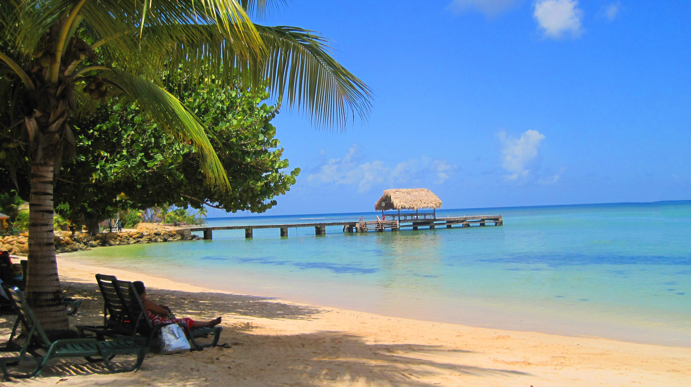
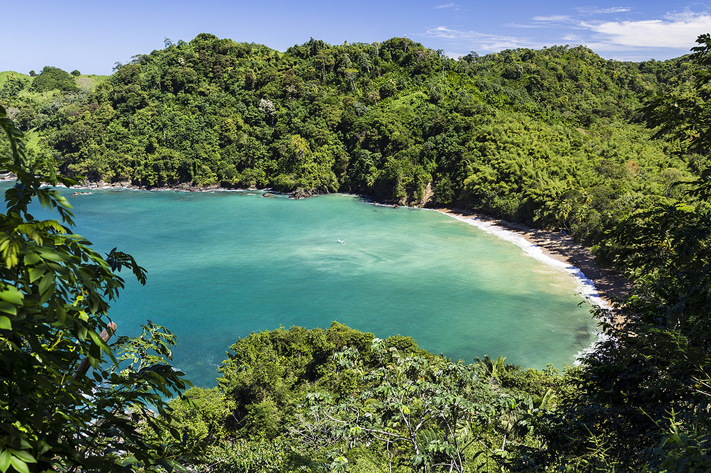
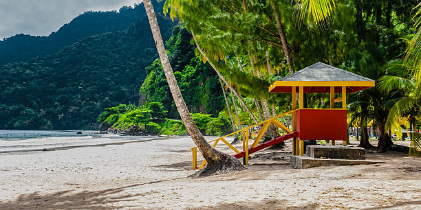

Pigeon Point is also known as Pigeon Point Heritage Park (PPHP) and is often considered Tobago’s most beautiful beach and is home to the world famous thatch-roofed jetty which has become an internationally recognised signature of Tobago. The resort includes a long stretch of white sand beach with warm aquamarine waters. There are excellent beach facilities such as bathrooms, showers and beach-chair rentals as well as bars and a restaurant. Tourist amenities include souvenir and water-sports shops.
Englishman's Bay is a secluded beach on the leeward coast of Tobago, between Castara and Parlatuvier. Although the bay draws fewer beach-goers that Tobago's western beaches do, it is considered one of the island's most beautiful. The beach itself is a classic crescent shape, capped by two heavily forested headlands descending from Tobago's Main Ridge. The sand starts immediately after the forest ends and is of a shallow to medium gradient and somewhat coarse grain. The beach's size changes little at high or low tides, due to the gradient. There is heavy beach break. Owing to the number of waves, the beach does not boast magnificent snorkeling.
The most popular beach in Trinidad, Maracas Bay is home to great tans, exciting surf and the wildly popular local street food known as bake and shark. The tumbling waves, with an average height of 1 meter (3 feet), make it an ideal place for body or board surfing. The expanse of beach is enough to accommodate the sunbather who likes her space or the nature lover who welcomes the sea blast as they set up camp. Maracas Bay has also garnered the reputation for being the lunch spot with an idyllic view. Known as the home of bake and shark, this destination is host to a variety of vendors who prepare the tasty offering. The secret, they say, is in the sauce. Really, the sauce, the tamarind sauce, the pepper sauce, garlic sauce, as these give the edge in deciding the best bake and shark among the huts that sell them.
Home | Carnival | Beaches | Contact Us
Project 1 — Trinidad & Tobago